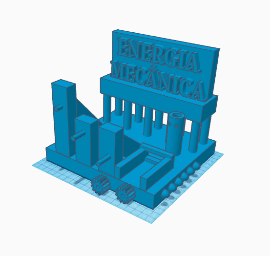

Nosso projeto é baseado na energia mecânica. Na energia mecânica se gera energia elétrica com base em movimentos de engrenagens.
Como é visto no modelo, se coloca uma manivela no pilar da esquerda, que ao girar, movimenta as engrenagens que estão conectadas em um motor, gerando energia para ligar um LED.
O modelo é feito em um site/aplicativo de modelagem chamado TinkerCad, e ele é gerado em uma impressora 3D da escola Sesi/Senai. Foi pensado como o princípio de uma usina eólica, para isso, uma pessoa é necessária para imitar o movimento do giro de uma turbina.
Fonte: TinkerCad
Jogo interativo: jogo